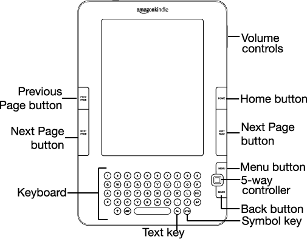

Thank you for purchasing Amazon Kindle. You are reading the Welcome section of the Kindle User's Guide. This section provides an overview of Kindle and highlights a few basic features so you can start reading as quickly as possible.
You can leave this guide at any time by pressing the Home button on your Kindle. To turn to the next page, press one of the Next Page buttons.
If your Kindle was a gift, you will need to register your device. Please look at the Getting Started instructions that came with your Kindle for information on registering your device.
If you haven't done so already, please follow the Getting Started instructions that came with your Kindle and plug in your Kindle to charge the battery. The charge indicator light on the bottom edge of your Kindle turns yellow and a lightning bolt appears on the battery icon at the top of the display. Charging the battery fully should take less than three hours and you can continue reading while it charges.
 Tip: The charge indicator light will turn green when the battery is fully charged.
Tip: The charge indicator light will turn green when the battery is fully charged.
If you prefer to read the Kindle 2 User's Guide side-by-side with the device, you can download and print a PDF copy from Amazon.com at:
http://www.amazon.com/kindlesupport
You navigate Kindle using the 5-way controller; the Home, Menu, Back, and Next/Previous Page buttons; and the keyboard:

To select a particular item such as a menu option or a specific word in your reading material, move the 5-way controller up, down, left, or right to highlight your choice and then press to select.
You can press the Next or Previous Page buttons to move forward or backward in your reading material and press the Back button to retrace your steps on your Kindle. Use the keyboard to type words or phrases when searching your reading material or items in the Kindle Store. You can also use the keyboard to create notes while reading. All of these are covered in more detail later in this guide.
Kindle uses a high-resolution display technology called electronic paper. It works using ink just like books and newspapers, but it displays the ink particles electronically. The page flash you see when you turn the page is part of the ink placement process.
The electronic paper display is reflective, which means unlike most displays, you can read it clearly even in bright sunlight. Also, electronic paper does not need power to hold the ink in place, which extends your Kindle's battery life.
Using the wireless Amazon Whispernet service, Amazon delivers content to your Kindle whenever and wherever you want it, within the wireless coverage area, using the same technology as a cell phone. By default, your Kindle ships with Whispernet already turned on. To turn Whispernet on or off, press the Menu button, move the 5-way controller up to underline "Turn Wireless On/Off," and then press the 5-way.
To optimize your reading experience, Kindle provides a quick way to adjust the size of the reading text among six sizes.

To try it now, press the Text key
 , move the 5-way controller to choose the size you prefer and press the 5-way to select. The text changes to the new size. Repeat the same steps to change the text size back or to change it to a size comfortable for you to read.
, move the 5-way controller to choose the size you prefer and press the 5-way to select. The text changes to the new size. Repeat the same steps to change the text size back or to change it to a size comfortable for you to read.
You can also choose to turn on the experimental application, Text-to-Speech, which will read aloud your books (where allowed by the rights holder), newspapers, blogs, and personal documents. You can either listen through your Kindle's external speakers or plug in earphones into the headphone jack. While Text-to-Speech is playing, the screen will turn the pages automatically so you can follow along while the audio is playing. You have the choice of hearing your content spoken with a male or female voice and can also further optimize the listening experience by slowing down or increasing the rate of speech.
Your Kindle includes The New Oxford American Dictionary. You can easily look up a particular word without leaving the content. Simply use the 5-way controller to navigate the cursor in front of the word you want defined. A definition of the word appears at the bottom of the screen. To view the full definition, press the Return key on the keyboard. To return to the text you were reading, press the Back button.
Although Kindle is about the size of a paperback book, it can store over a thousand digital books, newspapers, blogs, and magazines, which are referred to collectively as "content" throughout this guide. A copy of all your books and recent issues of newspapers and magazines purchased from the Kindle Store are kept on Amazon.com.
To open content on your Kindle, press the Home button. This displays a list of the content on your Kindle. Move the 5-way controller up or down to underline the item you want to open and then press the 5-way to open the item. To delete content on your Kindle, move the 5-way controller up or down to underline the item you want to delete. Move the 5-way to the left and then press the 5-way to complete the removal of the item.
To move previously deleted content from Amazon.com back to your Kindle, Whispernet must be on. From Home, select "Archived Items." This shows all of the content stored at Amazon.com. Underline the item you want to move back to your Kindle and move the 5-way to the right to start the transfer. In under a minute, the item re-downloads into your Kindle and appears in the list of content in Home.
If you have Whispernet on and you select "Shop in Kindle Store" from any menu, Kindle connects you to a broad offering of reading material including books, newspapers, blogs, and magazines. You can browse by category or check out the latest bestsellers, new and noteworthy items, or your personalized recommendations. You can see details about an item, read customer reviews, and even download free samples of books you are interested in. If you want to buy an item, Kindle uses secure Amazon 1-Click and then Whispernet delivers the item to your Kindle generally in under a minute with no wireless delivery charges to you.
Since Kindle connects to the Whispernet network, we deliver your favorite periodicals over the air to your device as soon as they are published, often before they are even available in print. For example, if you subscribe to the Kindle edition of The Wall Street Journal, the latest edition is wirelessly delivered overnight so you can read it each morning. Your favorite periodicals follow you wherever you go in Whispernet's broad coverage area, whether you are at home or on the road. Also, you pay only for your subscriptions; Amazon.com covers the wireless delivery cost.
Just as you would thumb through a physical newspaper or magazine to locate an article of interest, your Kindle supplies you with navigation shortcuts so that you can quickly zero in on an article of interest. By moving the 5-way controller right or left you can advance to the next or previous article and pushing the 5-way brings up the periodical's section list.
While you are in Home, the Kindle Store, or reading content, you can use your Kindle's search feature. From the keyboard, begin typing what you'd like to search for and then using the 5-way controller, select the range of your search. If you begin your search while in Home or with open content, you have the option to search for that item in all of your books, newspapers, blogs, personal documents, and annotations. You also have the option to focus your search to the built-in dictionary, the Kindle Store, Wikipedia, and the Web.
Have you ever been reading a book or a newspaper and wanted to clip and save a few words to refer to later? With Kindle, simply select "Add a Note or Highlight" from the menu and use the 5-way to highlight the content you want to clip and then press the 5-way to save your selection. The clipping is added to a file in Home called "My Clippings." You can review your clippings later, search for words or terms you clipped, and transfer the "My Clippings" file to your computer. This is a great way to capture your favorite quotations to share with others.
Kindle automatically saves your place in whatever book you are reading, but you can also add a bookmark to any page by pressing the Menu button and selecting "Add a Bookmark." You can see that the upper right corner of the page is dog-eared. Kindle stores all your bookmarks for the current content in your annotations. You can view them at any time by pressing the Menu button and selecting "My Notes & Marks."
Do you like to take notes and make comments while reading? You can add notes to any of the content on Kindle. Amazon automatically stores all of your book annotations in the "My Clippings" file and backs them up on Amazon servers so they will not be lost.
As an example, this sentence is highlighted and has a note attached as indicated by the superscripted number one to the right of this text. Using the 5-way controller, move the cursor over the notation number to see the note. To add your own note, move the cursor to the word where you want to add your thoughts, and begin typing your note. Then use the 5-way again to highlight the "save note" button onscreen and press the 5-way to select. You can later view, edit, or remove a note, or see all of your annotations by pressing the Menu button and selecting "My Notes & Marks."
If you own multiple Kindles, Whispersync makes it easy to synchronize the furthest page read in your book and your bookmarks among your devices. With Whispersync turned on, you can start a book on your Kindle, and pick up where you left off on your Kindle 2.
In addition to all of the great reading material you can get from the Kindle Store, Amazon can also convert your own documents so you can read them on Kindle. You can e-mail Microsoft Word, TXT, HTML, PDF, or image files like JPEGs and GIFs to your dedicated Kindle e-mail address (found on the Settings page on Kindle or the Manage Your Kindle page on Amazon.com). We will convert the document into Kindle format and wirelessly deliver it directly to your Kindle for a small fee or back to your computer for free. Currently, the conversion of PDF documents is an experimental feature on Kindle, and some complex PDF files might not format correctly on your Kindle.
This ends your brief introduction to just some of the capabilities on Kindle. The chapters that follow give a more complete overview of these and other features. Remember, you can always search on a particular feature or learn more about how to do a particular task by opening this guide and typing on the keyboard to activate Search.
The Table of Contents for the Kindle User's Guide shows you all of the topics covered in this guide. You can get to the table of contents by pressing the Menu button from any page. Move the 5-way down until you underline "Table of Contents" and press the 5-way to go to it.
You can also navigate by clicking an underlined word or words like the "Table of Contents" above. Underlined words indicate a link to somewhere else in the material you are reading, like a footnote, a chapter, or a web site. In the example above, when you navigate the 5-way controller over one of the underlined words, a hand icon will appear. Pressing the 5-way will take you to the beginning of the table of contents. Press the Back button to go back to where you were reading.
If you bought your Kindle with your Amazon account, it is already registered with your account information and you are ready to go. When you go to the Home screen, check the top left corner of the screen to see if your Amazon name (the same one you see when you are shopping on Amazon.com) is shown. If it says "My Kindle" instead of your Amazon account name, you need to register your Kindle. To register, first press Home to display the Home screen and then press the Menu button. Select "Settings" and then select "register" on the page that appears to enter your Amazon user name and password. If your Amazon user name or password contains characters not present on the Kindle keyboard, press the Symbol key on the bottom of the keyboard to see a menu of the extended characters and use the 5-way to select the character you require. Alternatively, you can register your Kindle by visiting the Manage Your Kindle page on Amazon.com at:
http://www.amazon.com/manageyourkindle
You can leave the Kindle User's Guide, or any item you are reading, at any time by pressing the Home button. If you are done reading, you can put your Kindle to sleep by sliding and releasing the power button located at the top of your Kindle (you wake up Kindle the same way). Sleeping your Kindle will extend battery life and also lock all of the keys and buttons so you don't inadvertently press one while not using your Kindle. When your Kindle is asleep, you will see an image on the screen. To turn off your Kindle completely, slide and hold the power switch for four seconds, then release. The Kindle screen will blank and the device will turn off. If you ever need assistance, you can use the Web or your telephone to contact us. See Chapter 9 for all of the Kindle Support contact options.